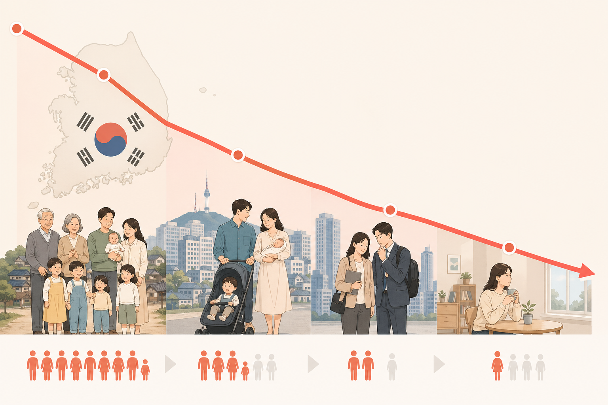
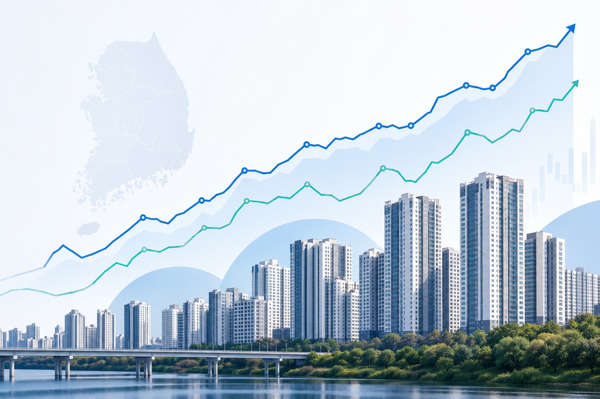
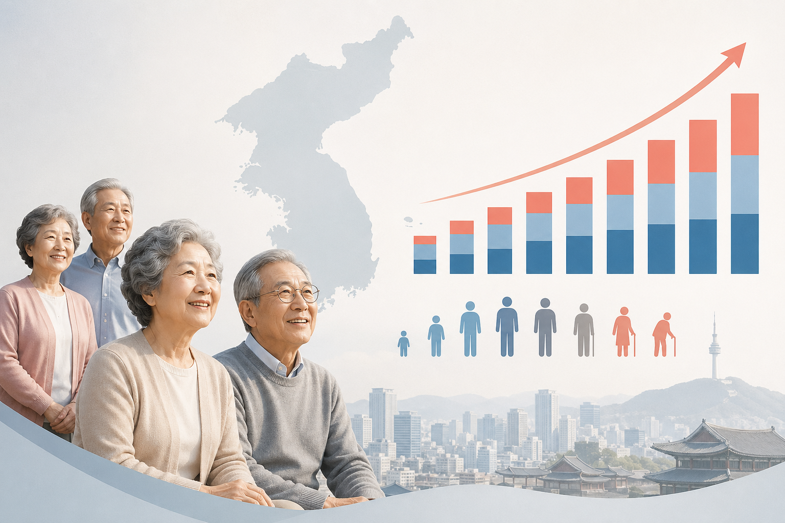
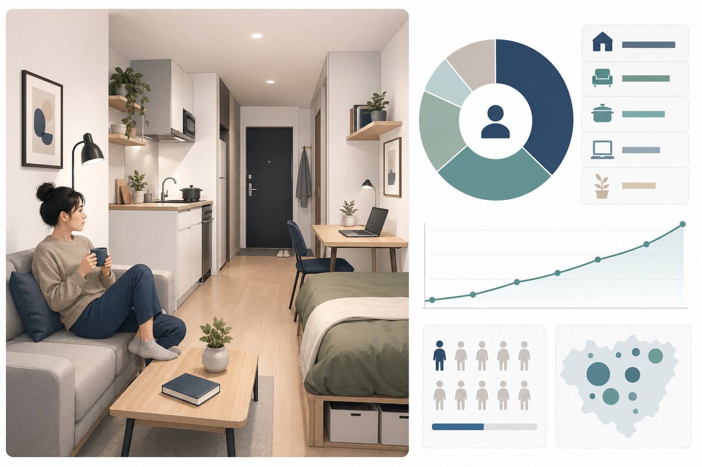
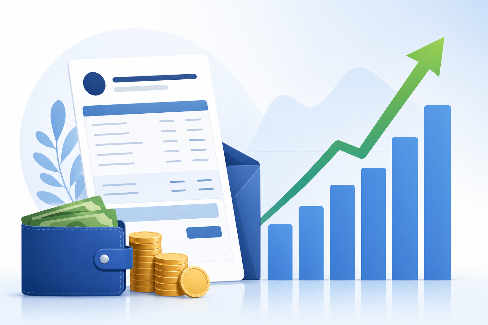

합계출산율
실시간 KOSIS API 검증 완료 · 10건최신 합계출산율0.72여성 1명당 출생아 수 · 전국, 2023
합계출산율 변화-0.48여성 1명당 출생아 수 · 2014~2023, 1.205 → 0.721 (-40.2%)
전국 합계출산율은 2014년 1.205에서 2023년 0.721로 낮아졌다. 30대 초반 출산율도 함께 확인해야 추세의 중심 연령대를 볼 수 있다.
딥 다이브 분석 보기 →로컬 저장소의 KOSIS 추출 데이터 10종을 요약하고, KOSIS 공식 API로 원천 응답을 대조했습니다. 각 주제는 요약 카드에서 원본 출처를 확인하고, 클릭하면 세부 딥 다이브 분석 문서로 이동합니다.

전국 합계출산율은 2014년 1.205에서 2023년 0.721로 낮아졌다. 30대 초반 출산율도 함께 확인해야 추세의 중심 연령대를 볼 수 있다.
딥 다이브 분석 보기 →
전국 주택매매가격 변동률은 2021년 상승 폭이 컸고, 2022년 하락 구간을 거친 뒤 2023년 말에는 약한 하락세로 마무리됐다.
딥 다이브 분석 보기 →
실업률은 2020년 고점 이후 낮아졌고 2024년에는 2.8% 수준이다. 경제활동인구는 장기적으로 증가했다.
딥 다이브 분석 보기 →
소비자물가 등락률은 2022년에 5.1%로 정점을 찍은 뒤 2024년 2.3%로 둔화됐다.
딥 다이브 분석 보기 →
65세 이상 인구는 2024년 1,025만 명을 넘었고, 전체 인구 대비 비중은 20.0%에 도달했다.
딥 다이브 분석 보기 →
전국 1인 가구는 2024년 804만 가구로, 일반가구의 36.1%를 차지한다. 2015년 이후 가구 수와 비중이 모두 크게 늘었다.
딥 다이브 분석 보기 →
외래 관광객 장기 추이는 팬데믹 충격과 회복 국면을 함께 보여준다.
딥 다이브 분석 보기 →재생에너지 발전량은 중장기적으로 증가했지만 전력 구성 내 비중 해석이 함께 필요하다.
딥 다이브 분석 보기 →
초등학생 수는 저출산 효과가 시차를 두고 교육 현장으로 이동하는 지표다.
딥 다이브 분석 보기 →
평균소득은 상승하더라도 분포와 중위값을 함께 봐야 생활 체감과의 차이를 줄일 수 있다.
딥 다이브 분석 보기 →